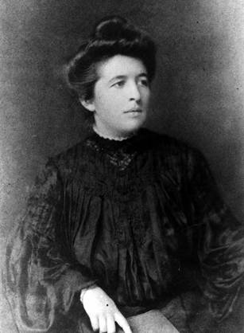
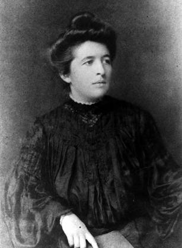

Dr. Dorothy Mabel REED 1 2 3 4 5 6
- Born: Sep 22, 1874, Columbus, Franklin County, Ohio
- Marriage: Prof. Charles Elwood MENDENHALL on Feb 14, 1906 in Talcottville, Lewis County, New York
- Died: Jul 31, 1964, Chester, Middlesex County, Connecticut at age 89
- Buried: Aug 7, 1964, Forest Hill Cemetery, Madison, Dane County, Wisconsin 7

 General Notes: General Notes:
NAME DISCREPANCY: Some family trees list her middle name as "MOTT". However, Dorothy applied for a U.S. passport on 7 Sep 1889 in New York, and clearly signed her name as "DOROTHY MABEL REED".
TRIPS: England (1919); England (1926); Guatemala (1938)
NOTEWORTHY: Married on Valentine's Day;
M.D. from John Hopkins Medical School;
Her research in pathology established conclusively that Hodgkin's disease, hitherto thought a form of tuberculosis, was a distinct disorder characterized by a specific blood cell, thereafter known as the Reed cell;
Lecturer in the Department of Home Economics at the University of Wisconsin;
Organized the first infant welfare clinic in Ohio (Madison, 1915);
Medical Officer with the U.S. Children's Bureau;
Traveled to Denmark, Mexico, Central America, California
DEATH: Arteriosclerotic Heart Disease
ADDITIONAL NOTES (from National Library of Medicine):
As a gifted pathology fellow working with William Henry Welch at the turn of the 20th century, Dorothy Reed-Mendenhall discovered a blood-cell disorder that is characteristic of Hodgkin's disease. Later, her investigation of obstetrical practice inspired a landmark Children's Bureau study on the impact of unnecessary medical intervention in childbirth. Despite such achievements, Mendenhall was often criticized by male colleagues who were unsupportive of her attempts to balance her career in medicine with motherhood and family life. Some considered her "an able woman who had married and failed to use her expensive medical education." Yet the story of her life and work reveals a great determination to pursue both professional and personal fulfillment and unwavering confidence to challenge medical orthodoxy in the interests of mothers and children.
Dorothy Reed was born in Columbus, Ohio, in 1874. Her father, who ran a shoe-manufacturing company, died when she was only 6 years old. He left enough wealth to allow for her upper-class schooling by a governess, as well as for several trips to Europe as she was growing up.
Reed graduated from Smith College in 1895, then spent a year at the Massachusetts Institute of Technology where she was the only woman in her chemistry class. After completing her preparatory courses in the sciences, she enrolled at Johns Hopkins Medical School in 1896. Because she already encountered frequent hostility from male students while at the Massachusetts Institute of Technology, she was undeterred by negative attitudes toward women physicians held by students and faculty at Hopkins and accomplished a great deal during her training. During her summer break in 1898, she and a fellow student became the first women to be employed at a US Naval hospital when they served as assistants in the operating room and bacteriology laboratories at the Brooklyn Navy Yard Hospital. In 1900, she won a prestigious internship to study with William Osler, MD, and in 1901 she won a pathology fellowship with William Welch, MD. While working in the Hopkins laboratories, she discovered a blood-cell disorder that was linked to Hodgkin disease, now known as the Reed cell (or the Reed-Sternberg cell, after Dorothy Reed and Karl Sternberg, an Austrian pathologist).
After graduation she accepted an internship in pediatrics at Babies Hospital in New York City, becoming the first resident physician there in 1903. Her sister died in the summer of that year, leaving 3 children. Reed took on the responsibility of providing for their education. In 1906, she married Charles Elwood Mendenhall, and the couple moved to Madison, Wisconsin, where Charles served as professor of physics at the University of Wisconsin. A year later, Reed Mendenhall lost her first child shortly after birth because of poor obstetrical care. She went on to have 3 more children, and spent 8 years away from work. She developed a keen interest in child health, and began collecting epidemiological data.
When she returned to medicine, in 1914, she researched child and maternal health, and wrote bulletins for the University of Wisconsin's Department of Home Economics, the Wisconsin State Board of Health, and the US Department of Agriculture. In Madison, Wis, in 1915, she organized Wisconsin's first infant welfare clinic, with the help of a volunteer organization and the Visiting Nurse Association. She served as chairperson of the Association until 1936. Four more clinics were eventually established, and, in 1937, Madison was cited as the city with the lowest infant mortality rate in the United States.
In 1917, the family moved to Washington, DC, and Mendenhall took a job at the Children's Bureau, participating in its national program to weigh and measure children aged younger than 6 years, from 1918 to 1919. She also surveyed war orphanages in France and Belgium, and studied nutrition among English children. In 1918, the Bureau printed her publication, Milk: The Indispensable Food for Children. At the end of the war, she moved back to Wisconsin, but continued to undertake fieldwork and research for the Bureau. She also wrote 6 chapters of Child Care and Child Welfare: Outlines for Study, published in 1921.
In 1926, she investigated infant and maternal mortality rates in Denmark and compared them with American statistics, concluding that the higher death rates in America were caused by unnecessary medical intervention. Mendenhall proposed that midwives be taught best obstetrical practices, following the Danish model. In 1929, the Children's Bureau published her analysis as Midwifery in Denmark. In 1928, the Bureau issued another of her reports, What Is Happening to Mothers and Babies in the District of Columbia?, excerpted here.
Mendenhall enjoyed a rich personal life and a vibrant career in public health. After the death of her husband in 1935, she traveled in Central America and Mexico, then settled in Chester, Conn, where she died in 1964. Despite pressure from colleagues in medicine who had little time for women physicians or issues of women's health, she devoted her career to the meticulous investigation of child and maternal health.
(National Library of Medicine; http://www.ncbi.nlm.nih.gov/pmc/articles/PMC1470592)
Research Notes:
-- Mendenhall Family Association (http://mendenhall.org/mfa/tng/getperson.php?personID=I29072&tree=Mendenhall2010)
-- Wikipedia (http://en.wikipedia.org/wiki/Dorothy_Reed_Mendenhall)
-- National Library of Medicine
-- Find A Grave, Memorial # 86643296
Dorothy married Prof. Charles Elwood MENDENHALL, son of Prof. Thomas Corwin MENDENHALL and Susan A. MARPLE, on Feb 14, 1906 in Talcottville, Lewis County, New York. (Prof. Charles Elwood MENDENHALL was born on Aug 1, 1872 in Columbus, Franklin County, Ohio, died on Aug 18, 1935 in Madison, Dane County, Wisconsin and was buried on Sep 13, 1935 in Forest Hill Cemetery, Madison, Dane County, Wisconsin 7.)
|
") 
